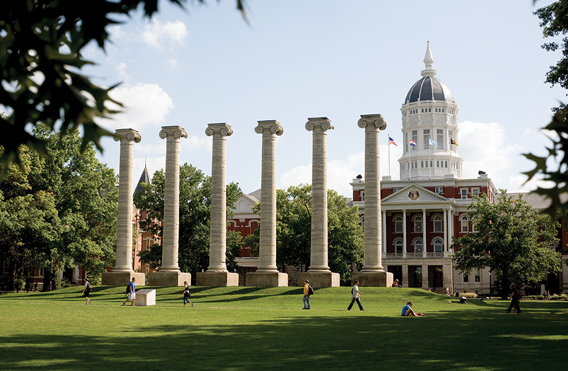

One Newsroom is the consolidation of all the work done across the newsroom at the Missouri School of Journalism. The Missourian, KOMU and KBIA all work from separate newsrooms, but routinely collaboarate to bring the most well-rounded pieces of journalism to you. This site is where you can find all collaborations between the three newsrooms — past, present and future. We are proud to be able to collaborate across platforms and are proud to call Mizzou the home of One Newsroom.
